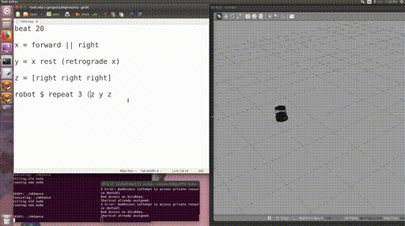

Old Projects
The Dynamics of Bouncing Robots

Many robots, such as vacuuming robots, have a default behavior of moving forward in a straight line until they encounter an obstacle. We call these bouncing robots, and we can define different “bounce rules” for what the robot should do when it encounters a boundary. Then, we can analyze the behavior of different bounce rules in polygonal environments and we are working toward synthesizing strategies of bounce rules for different tasks such as navigation and patrolling.
This work has connections to dynamical billiards: to make a bouncing robot explore a space, you want a bouncing law that covers the polygon well. To make a bouncing robot localize, you want the robot to become “trapped” in a small region of phase space (the “attractor”). I have taken an “experimental mathematics” approach to this work, building a simulator and using it to explore and verify the dynamical systems analysis.
This project has had papers at IROS 2017 and WAFR 2018.
Improv: a High-Level Language for Live-Coding Robot Motion

Started as a project in Amy LaViers’ class, I am developing a platform-independent domain-specific language (DSL) using Haskell. This language uses choregraphic technologies (for example, the difference between “reversing” a movement sequence and “retrograding”) to improve readability and writeability for prototyping robotic movement. The user describes movements in a high-level language which is then translated to ROS messages and sent to a simulator or robot to see the effects of the commands in real time. The goal is to enable live coding of robots, for practical everyday control of such robots as well as performance and educational applications.
The summary paper of the class project can be found here, and we had a paper at MOCO 2018.
The language is still under development; code and documentation can be found here. Please let us know if you try it out!
Self-Assembly and Aggregate Robots

Our lab has a long history of working with weaselballs, a “model organism-bot” of an uncontrollable robot. I am leading a team of undergraduates who are building cases that allow the weaselballs to connect into assemblies. We are analyzing the dynamics of these assemblies experimentally, in the lab and in simulation. Check out our poster (high-res version here):

Our long-term goal is to create minimal information-space based controllers which control the connections between agents so that the entire assembly acts like a ratchet or motor - converting the “thermal” energy of the weaselballs into useful linear or rotational motion. We are also interested in designing environments that control the bulk thermodynamic properties of the weaselballs, and creating analouges to “pressure” that would allow objects in the environment to be collectively manipulated and transported.
There are applications from this work in micro- and nano-robotics, especially with the exciting new advances in active particles.
Automated Robot Design
I am very interested in using tools from formal methods, such as model checking and synthesis, to help roboticists explore the space of robot designs. This can help us in several ways:
- automate the process of proving bounds on robots’ abilities (how do different combinations of sensors/actuators affect a robots ability to localize, navigate, or do some other task?)
- make creating new robots easier and more fun, especially for people who are not expert roboticists (hobbyists, small businesses, children, etc).
This exciting new research area leverages advances from formal methods and from the fabrication (printable / foldable / modular robots) and design communities.
To this end, I am a contributor to the robot design game, an informal (and fun!) way of exploring the trade-offs between robotic resources and capabilities. I am also helping organize the Workshop on Minimality and Trade-offs in Automated Robot Design at RSS 2017.
Self-Assembly
I am interested in graph grammars and rewriting based approaches to modelling assembly, especially in conjunction with machine learning and automating rewriting-based strategy generation. This project has stalled because the question of how to formulate specifications that are amenable to machine learning and rewriting is Very Hard.
With Yuliy Baryshnikov, I have been working on a simple model of fetal morphogenesis (how does a developing embryo change from a sphere to a torus?). I have several simulations environments here. Yuliy is currently on sabbatical and thus I am shelving this project for now.
Tracking Motion of Rolling Robots
This project explores what can be reconstructed about the motion and environment of a rolling robot with an IMU fixed to the inside of its spherical surface. Projects like Sphero use IMUs fixed to an internal platform, whereas we’re tracking the rotation of the robot, essentially creating a “3D wheel encoder”.
Documentation on my github includes a general guide to setting up a small, battery-powered IMU that logs to an SD card.
Results from this project indicated that it is possible to get decent estimates of the distance and direction traveled by a rolling robot between collisions.
Predicted Information Gain and Exploratory Robots
“Predicted Information Gain” is an exploratory learning algorithm developed by the Redwood Center for Computational Neuroscience. While working with Jim Crutchfield’s group at UC Davis, I adapted this algorithm for small robots and analyzed their learned representations of the environment. I also worked on developing ways to include more memory in the algorithm to adapt to hidden environments. My paper on the project is here. From summer 2014.
Partially Coherent Transport
Recent discoveries have indicated that some photosynthetic structures are able to use vibrational modes in proteins to encourage semi-coherent transport of energy. This means that excitons are not collapsed down into one state, but remain in a superposition of states during transport, which is a faster and more efficient way to transport energy. My project involved modelling this process using the Hierarchical Equations of Motion, a reformulated approximation to the solution of the Schrodinger Equation. Using these models, my group and myself identified several physical characteristics for highly coherent systems. This was a senior design project, and research has been passed on to a new group and is ongoing. My poster that I presented on my work can be found here, and a more detailed overview that I wrote with my two research partners is here. From academic year 2013-2014.